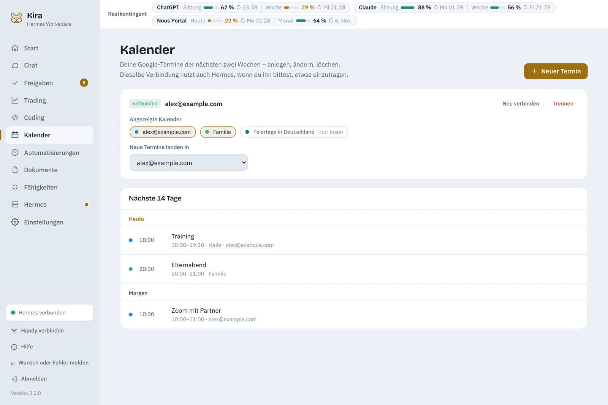

Morgens weißt du, was ansteht.
„Dein Tag“ auf der Startseite fasst zusammen, was heute wichtig ist. Auf Wunsch schreibt Hermes dir das Briefing und schickt es morgens aufs Handy.
- Termine aus Google Kalender – anlegen, ändern, löschen; Hermes trägt auf Zuruf ein
- Was Hermes heute erledigt und was auf dich wartet
- Watchlist, nächster Preisalarm, Kosten und Kontingent
